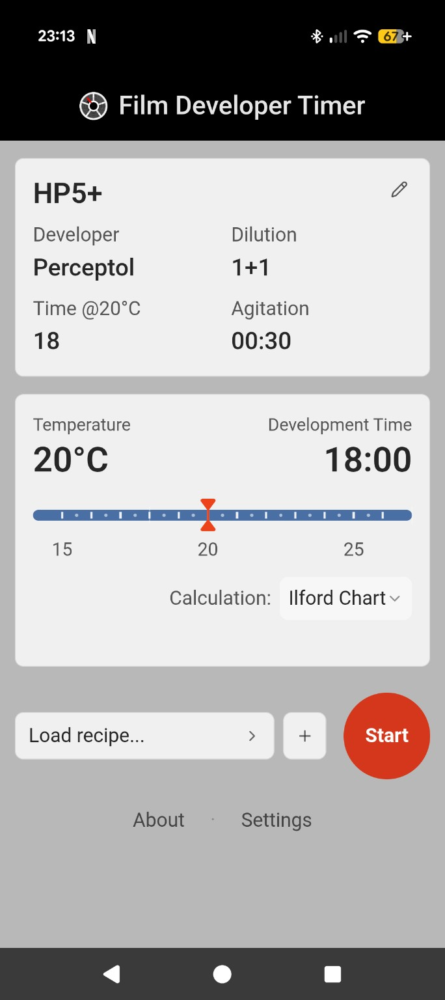
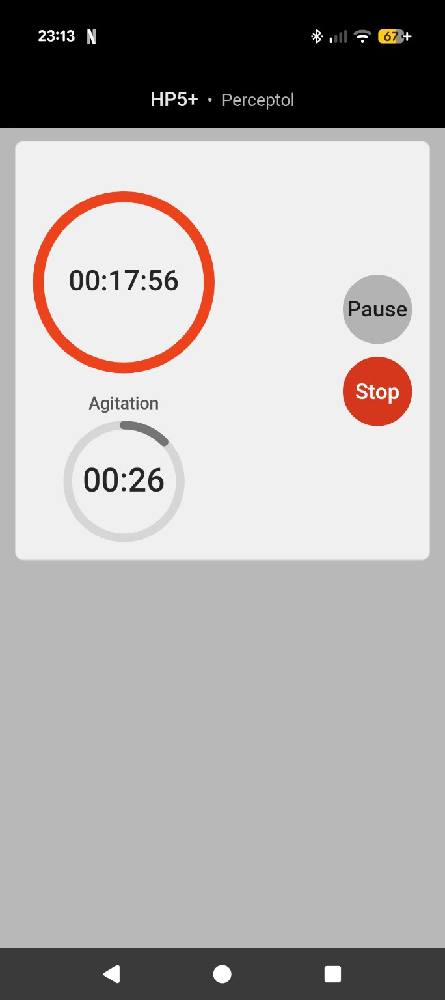

Film Developer Timer
A digital timer for analogue film processing.


Recipes, dilution and temperature belong to preparation. During development the interface concentrates on remaining time, agitation and the end of the cycle.
- Process
- Development and agitation timing
- Preparation
- Film, developer and temperature
- Interface
- Stable, legible countdown
Screens shown are from the application. The linked app is the source for current functionality.